"발명은 어려운 것이 아니에요! 주변의 사소한 불편함을 6가지 발명 마법(더하기, 빼기, 모양바꾸기, 반대로하기, 용도바꾸기, 크기바꾸기)으로 살짝 비틀어보면 세상을 바꾸는 멋진 생각 그물이 완성됩니다!"
원래 있던 물건에 다른 물건이나 편리한 기능을 하나 더 붙여요.
걸리적거리거나 불편했던 부품, 번거로운 과정을 없애요.
구조나 형태를 살짝 변형해서 불편함을 싹 해결해요.
위아래, 안팎, 방향이나 순서를 거꾸로 바꾸어 봐요.
물건의 원래 용도를 다른 용도로 바꾸어 만듭니다.
크기를 아주 작게 줄여서 휴대하거나 엄청 크게 키워요.
유튜브 UI가 깨끗이 제거된 16가지 천재 발명품 사진을 구경하고, 6가지 발명 기법이 어떻게 쓰였는지 탐색합니다.
학교, 집, 화장실, 비 오는 날 등 내가 일상에서 직접 겪었던 귀찮고 불편했던 상황을 3문장 문장완성기로 집중 정리합니다.
발명 룰렛 🎲을 돌려 당첨된 기법 힌트를 보며, 알록달록 가상 포스트잇에 떠오르는 아이디어를 자유롭게 붙입니다.
중심 문제에서 6가지 발명 기법 가지가 뻗어나오며, 아이디어를 나뭇가지처럼 연결하여 멋진 생각 그물 이미지(PNG)로 저장합니다.
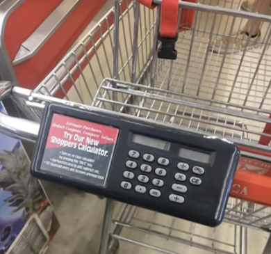
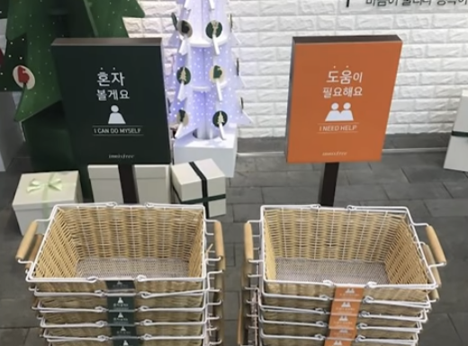
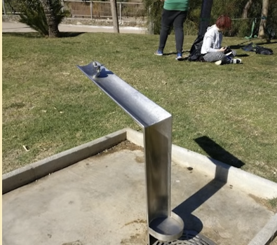
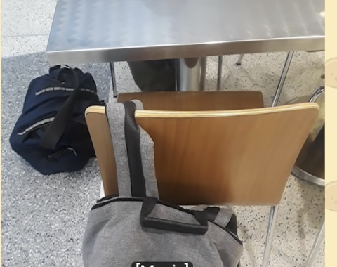
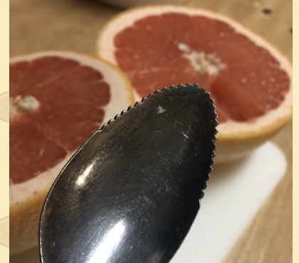
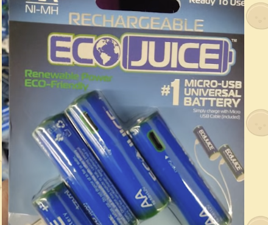
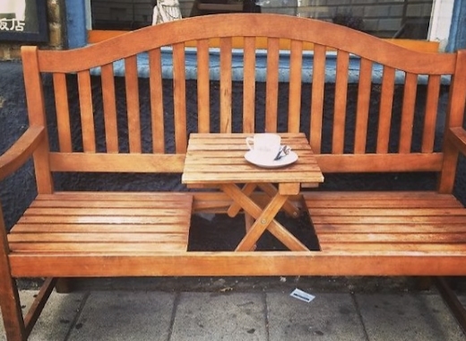
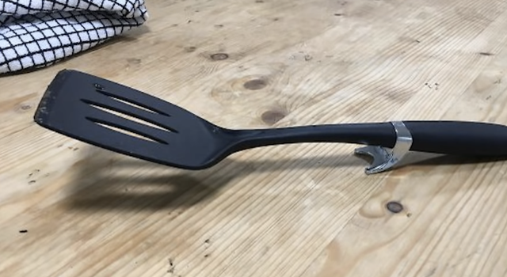
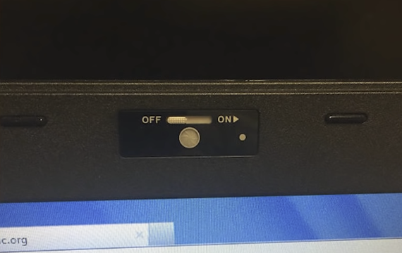
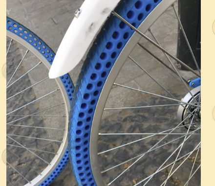
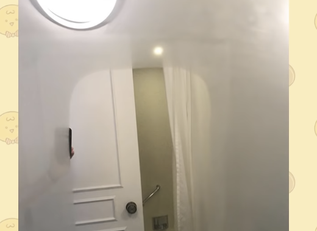
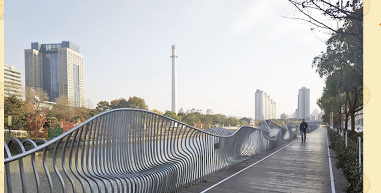
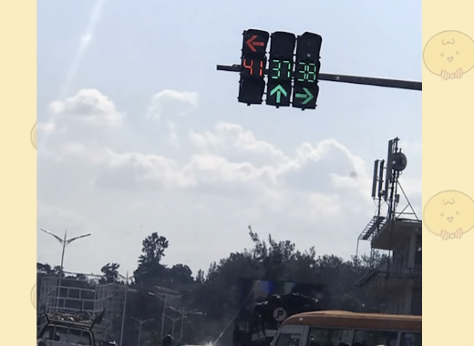
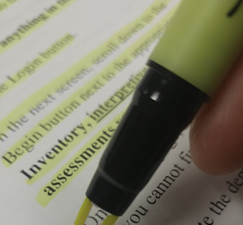
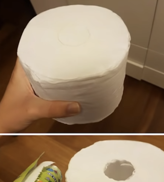
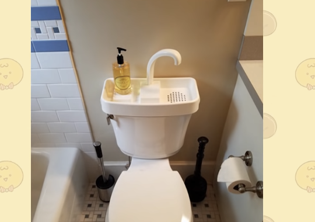